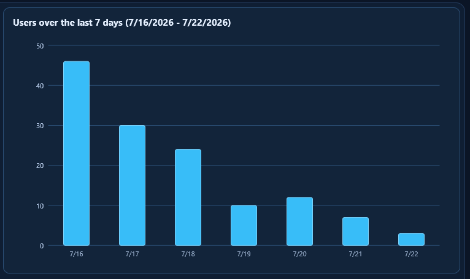

Users Graph

The users graph shows the selected date range as readable bars.
- The graph starts at zero and uses whole-number scale labels.
- Hover over a bar to see the exact value.
- The title includes the date span so you know what you are looking at.